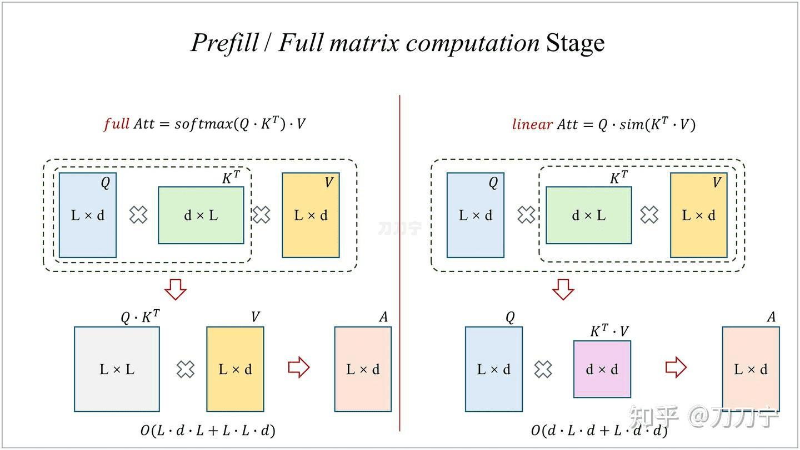
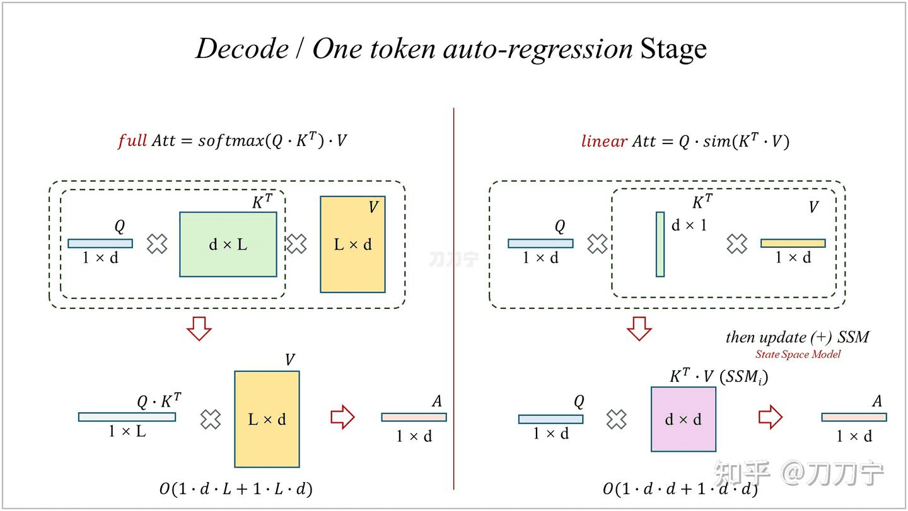
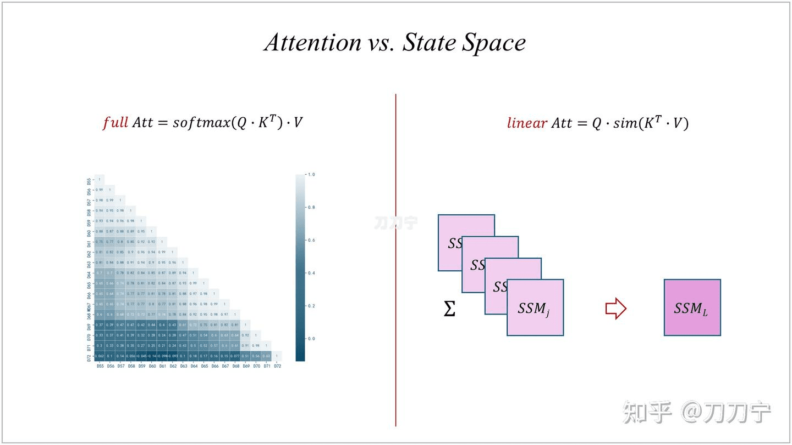
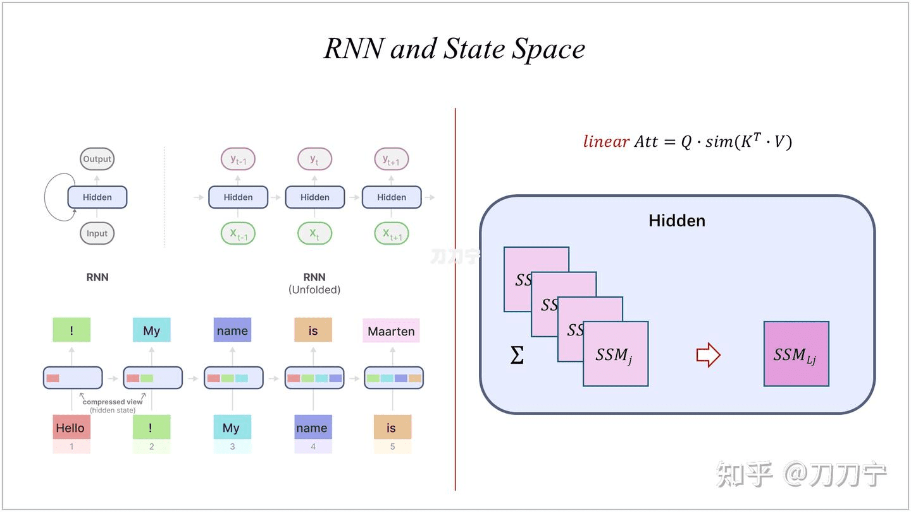
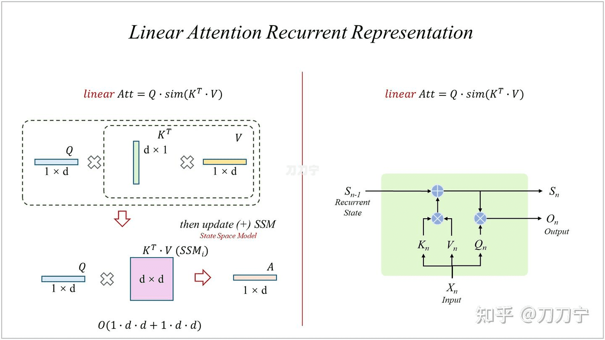
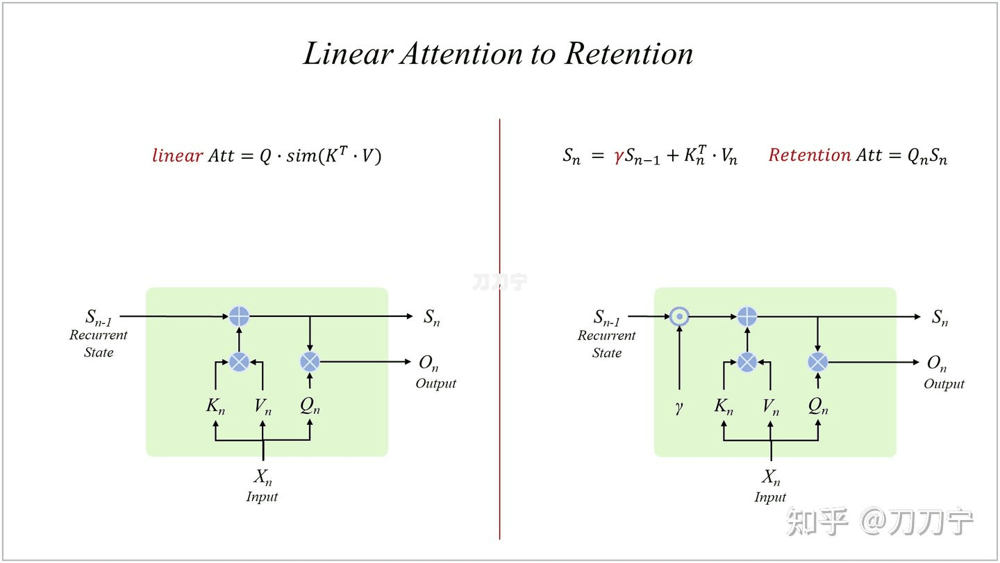
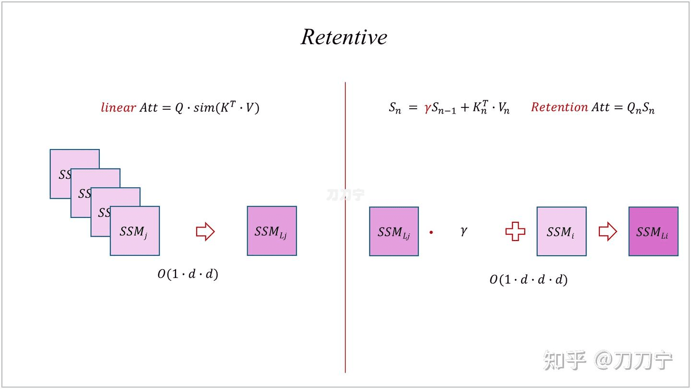
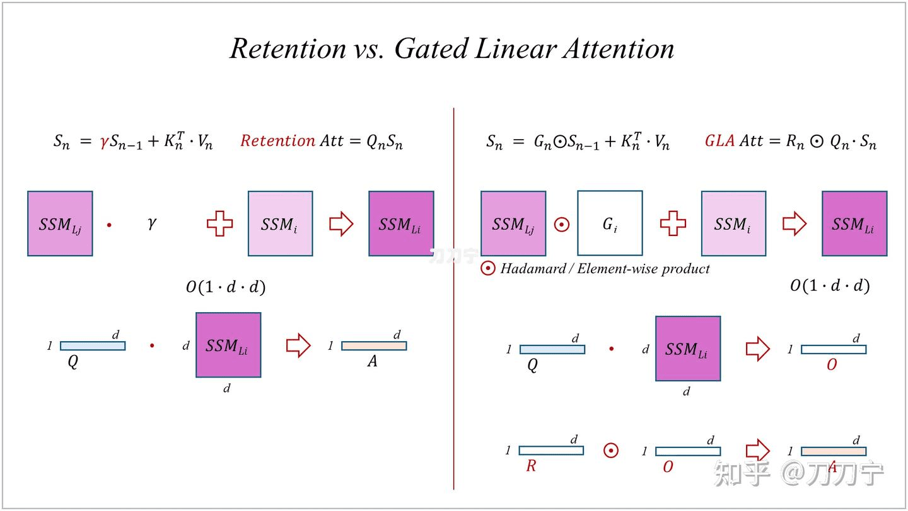
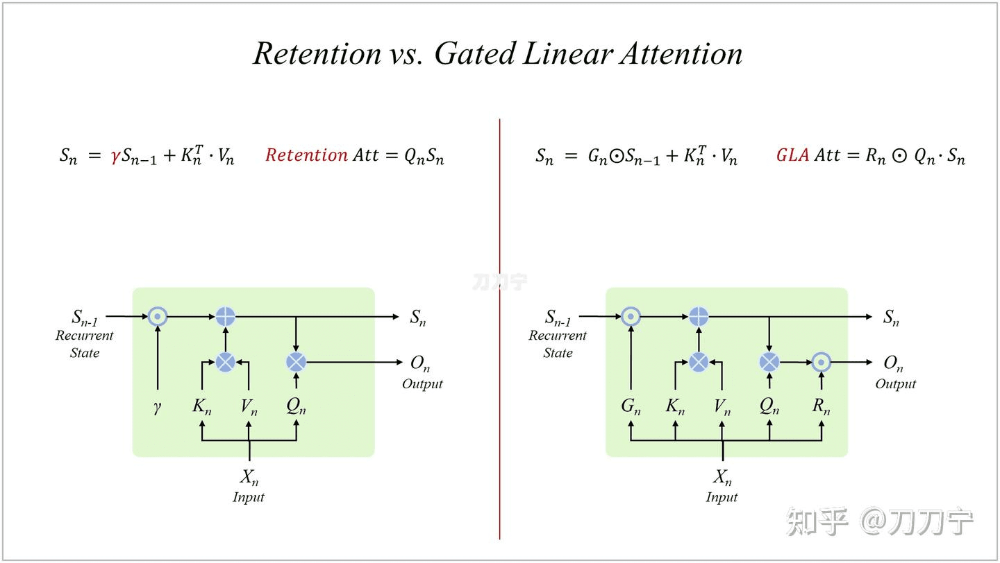

LineraAttention
前提知识
基本介绍
LinearAttention 是 Transformer 的一种改进，主要用于减少计算量。如下图所示，L 是序列也就是上下文的长度，当前复杂度是 LxLxd，这时我们所熟悉的。而下图 LinearAttention 则是将 softmax 去掉，用近似的函数 sim 来替代并且改变了 QKV 的计算顺序，这时中间结果从 LxL 的矩阵变成了 dxd，同时复杂度变成了 dxdxL（当然 d 如果是 4096 这个级别，d 平方已经在千万级别也不小了，这时还有工作可以考虑减小 d 等等），但是整个运算过程确实和 L 的长度呈线性相关性了。

sim 函数
Linear Attention 里的 sim 函数，本质是用一个核函数（特征映射）替代 Softmax，定义为：
常用形式
保证输出非负，常见几种：
- ReLU 核：$\(\phi(x)=\text{ReLU}(x)\)$
- 正余弦核：$\(\phi(x)=[\sin(x),\cos(x)]\)$
- 指数核（近似 Softmax）：$\(\phi(x)=\exp(x)\)$
- 径向基（RBF）：$\(\phi(x)=\exp(-\|x\|^2/2\sigma^2)\)$
直观理解
- Softmax：用 \(\exp\) 把相似度非线性放大+归一化，差异被拉得很开。
- Linear sim：先把 \(q,k\) 映射到非负空间 \(\phi(\cdot)\)，再做点积，同样衡量相似度，但没有指数放大，可以用结合律把复杂度从平方降到线性。
一句话总结：sim(q,k) = φ(q)ᵀφ(k)，是 Linear Attention 用来替换 Softmax 的非负相似度核。
上图是 Prefill 阶段，在 Decode 阶段中，同样是有帮助的。每一次计算出的中间结果 dxd 的矩阵，是可以直接叠加到历史中间矩阵的。这个中间矩阵比较重要，我们称之为 State Space Model ，每一次新的 SSM 和之前的 SSM 直接进行相加，我们要存储这个 SSM 即可。

本质区别
再进一步来看的话，full attention 因为每一次都增加了运算长度，进而保留了每一个 query 和历史上每一个生成的 token 之间的关系，而 linear attention 因为每次都在更新 SSM ，所有信息都保留在了 SSM 里，SSM 大小不变，叠加进去的具体次数的信息因为加法操作后失去了 query 的指向标签，在运行时是无法再将具体哪一次的信息单独抽取出来的。
同时，既不能强调什么，也不能丢弃什么，也就是说重点也不能突出，非重点也不会忘记，就好像一锅粥一样。左脑都是面粉，右脑都是水，脑子一动就都是浆糊。没法精炼提取太多有价值的信息出来。
这时大家应该对于两者的区别有所直观感受了， softmax 除了在当次加大了重点，抛弃了非重点之外，更重要的是因为 softmax 的存在，QKV 的运算公式变成了 L 平方，进而保留了所有 token 和 token 之间的相对关系，使得信息与信息关系全部得到的完整的保留。重点的需要强调的一旦运算就得到了突出，非重点的该遗忘的多次运算后就选择了遗忘。同时，无法有效的对当前语义和之前某个具体节点进行有效的依赖。
因此，我们可以理解为 SSM 实现了对每一个历史步骤的记录和压缩，但是忽略了具体的步数索引。

RNN and LSTM
这时我们自然而然的想到了什么，是不是这就是 RNN ？RNN 中的那个 hidden state ，就是这里的一个 state space model 的中间状态矩阵。
所以 Linear Attention Transformers 的论文名字就叫 Transformers are RNNs: Fast Autoregressive Transformers with Linear Attention。

是不是很熟悉的感觉，RNN 也是同样面临无法有效的对当前语义与之前某个具体节点进行有效的依赖的问题，所以就有了 LSTM 这样的技术，LSTM 是长短期记忆，它通过一系列门控和组合机制，使得在下图右下图中的 hidden state space 中的状态可以根据输入捕捉到历史信息中关联最紧密的某些信息。
我们现在可以把 Linear Attention 拿过来进行套用表示了，可以发现，和 RNN 、LSTM 来进行对比就会发现，状态线是一样的，而输入则由直接输入变成了 QKV 三类键值。而相比 full attention，KV 先乘和之前 t-1 的 SSM 进行叠加得到 t 的 SSM ，再和 Q 相乘得到输出。

因此，有很多方法是利用 RNN 和 LSTM 思路去优化 LinearAttention，例如 retention，核心公式也不复杂，增加了一个用来控制对之前 SSM 状态的一个加权控制。

如果回到我们上面的图片逻辑表达方式上，就可以简单表达为如下图的形式：

如此简洁的结构必然存在一定的问题，其与循环神经网络（RNN）和长短期记忆网络（LSTM）具有一定的类比性，需要更为复杂的带有遗忘门（forget gate）的注意力机制/状态空间结构。并且这里的遗忘门是输入数据依赖的，并非如保留机制（retention）中人为固定的。因此类似 LSTM 的技术，如下图所示，注意这里的⊙符号代表 element-wise 的计算，称为 hadamard 乘法，不是矩阵乘法。


Mamba and Other
再往下，就不谈了！对于我而言了解上面的就足够了。